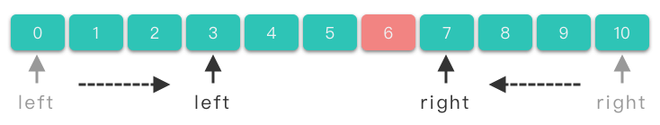
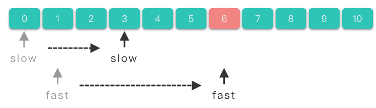
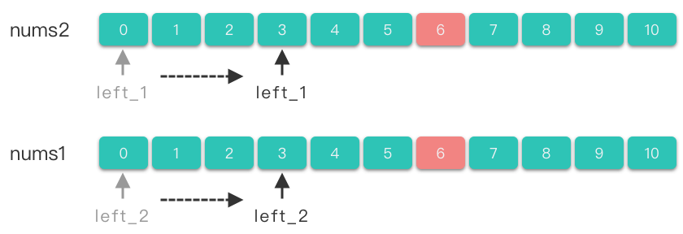
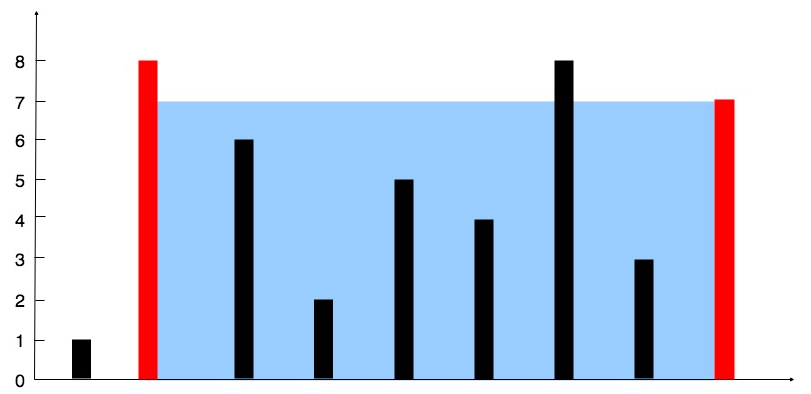

数组双指针（Double Pointer） | Word count: 5.3k | Reading time: 21min | Post View:
1.双指针简介
双指针（Two Pointers） ：指的是在遍历元素的过程中，不是使用单个指针进行访问，而是使用两个指针进行访问，从而达到相应的目的。如果两个指针方向相反，则称为「对撞指针 」。如果两个指针方向相同，则称为「快慢指针 」。如果两个指针分别属于不同的数组 / 链表，则称为「分离双指针 」。
在数组的区间问题上，暴力算法的时间复杂度往往是 $O(n^2)$。而双指针利用了区间「单调性」的性质，可以将时间复杂度降到 $O(n)$。
2.对撞指针
对撞指针 ：指的是两个指针 $left$、$right$ 分别指向序列第一个元素和最后一个元素，然后 $left$ 指针不断递增，$right$ 不断递减，直到两个指针的值相撞（即 $left == right$），或者满足其他要求的特殊条件为止。

2.1 对撞指针求解步骤
使用两个指针 $left$，$right$。$left$ 指向序列第一个元素，即：$left = 0$，$right$ 指向序列最后一个元素，即：$right = len(nums) - 1$。
在循环体中将左右指针相向移动，当满足一定条件时，将左指针右移，$left += 1$。当满足另外一定条件时，将右指针左移，$right -= 1$。
直到两指针相撞（即 $left == right$），或者满足其他要求的特殊条件时，跳出循环体。
伪代码模板：
1 2 3 4 5 6 7 8 9 10 11 12 left, right = 0 , len (nums) - 1 while left < right: if 满足要求的特殊条件: return 符合条件的值 elif 一定条件 1 : left += 1 elif 一定条件 2 : right -= 1 return 没找到 或 找到对应值
2.2 对撞指针适用范围 对撞指针一般用来解决有序数组或者字符串问题：
查找有序数组中满足某些约束条件的一组元素问题：比如二分查找、数字之和 等问题。
字符串反转问题 ：反转字符串、回文数、颠倒二进制等问题。
3.快慢指针
快慢指针 ：指的是两个指针从同一侧开始遍历序列，且移动的步长一个快一个慢。移动快的指针被称为 「快指针（fast）」，移动慢的指针被称为「慢指针（slow）」。两个指针以不同速度、不同策略移动 ，直到快指针移动到数组尾端，或者两指针相交，或者满足其他特殊条件时为止。

3.1 快慢指针求解步骤
使用两个指针 $slow$、$fast$。$slow$ 一般指向序列第一个元素，即：$slow = 0$，$fast$ 一般指向序列第二个元素，即：$fast = 1$。
在循环体中将左右指针向右移动。当满足一定条件时，将慢指针右移，即 $slow += 1$。当满足另外一定条件时（也可能不需要满足条件），将快指针右移，即 $fast += 1$。
到快指针移动到数组尾端（即 $fast == len(nums) - 1$），或者两指针相交，或者满足其他特殊条件时跳出循环体。
伪代码
1 2 3 4 5 6 7 slow = 0 fast = 1 while 没有遍历完： if 满足要求的特殊条件: slow += 1 fast += 1 return 合适的值
3.2 快慢指针使用范围 快慢指针一般用于处理数组中的移动、删除元素问题 ，或者链表中的判断是否有环、长度问题 。关于链表相关的双指针做法我们到链表章节再详细讲解。
4.分离双指针
分离双指针 ：两个指针分别属于不同的数组，两个指针分别在两个数组中移动。

4.1 分离双指针求解步骤
使用两个指针 $left\underline{}1$、$left\underline{}2$。$left\underline{}1$ 指向第一个数组的第一个元素，即：$left\underline{}1 = 0$，$left\underline{}2$ 指向第二个数组的第一个元素，即：$left\underline{}2 = 0$。
当满足一定条件时，两个指针同时右移，即 $left\underline{}1 += 1$、$left\underline{}2 += 1$。
当满足另外一定条件时，将 $left\underline{}1$ 指针右移，即 $left\underline{}1 += 1$。
当满足其他一定条件时，将 $left\underline{}2$ 指针右移，即 $left\underline{}2 += 1$。
当其中一个数组遍历完时或者满足其他特殊条件时跳出循环体。
伪代码模板：
1 2 3 4 5 6 7 8 9 10 11 left_1 = 0 left_2 = 0 while left_1 < len (nums1) and left_2 < len (nums2): if 一定条件 1 : left_1 += 1 left_2 += 1 elif 一定条件 2 : left_1 += 1 elif 一定条件 3 : left_2 += 1
4.2 分离双指针使用范围 分离双指针一般用于处理有序数组合并，求交集、并集 问题。
5.实战题目 5.1 两数之和Ⅱ-输入有序数组 167. 两数之和 II - 输入有序数组 - 力扣（LeetCode）
1 2 3 4 5 6 7 8 9 10 11 12 13 14 给你一个下标从 1 开始的整数数组 numbers ，该数组已按 非递减顺序排列 ，请你从数组中找出满足相加之和等于目标数 target 的两个数。如果设这两个数分别是 numbers[index1] 和 numbers[index2] ，则 1 <= index1 < index2 <= numbers.length 。 以长度为 2 的整数数组 [index1, index2] 的形式返回这两个整数的下标 index1 和 index2。 你可以假设每个输入 只对应唯一的答案 ，而且你 不可以 重复使用相同的元素。 你所设计的解决方案必须只使用常量级的额外空间。 示例 1 ： 输入：numbers = [2 ,7 ,11 ,15 ], target = 9 输出：[1 ,2 ] 解释：2 与 7 之和等于目标数 9 。因此 index1 = 1 , index2 = 2 。返回 [1 , 2 ] 。
双指针 - 对撞指针
1 2 3 4 5 6 7 8 9 10 11 12 13 14 15 16 17 18 19 class Solution {public : vector<int > twoSum (vector<int >& numbers, int target) { int left = 0 ; int right = numbers.size () - 1 ; while (left < right) { int sum = numbers[left] + numbers[right]; if (sum == target) { return {left + 1 , right + 1 }; } else if (sum > target) { right--; } else { left++; } } return {-1 , -1 }; } };
5.2 验证回文串 125. 验证回文串 - 力扣（LeetCode）
1 2 3 4 5 6 7 8 9 10 11 12 13 如果在将所有大写字符转换为小写字符、并移除所有非字母数字字符之后，短语正着读和反着读都一样。则可以认为该短语是一个 回文串 。 字母和数字都属于字母数字字符。 给你一个字符串 s，如果它是 回文串 ，返回 true ；否则，返回 false 。 示例 1 ： 输入: s = "A man, a plan, a canal: Panama" 输出：true 解释："amanaplanacanalpanama" 是回文串。
双指针 - 对撞指针
1 2 3 4 5 6 7 8 9 10 11 12 13 14 15 16 17 18 19 20 21 22 23 24 25 26 27 28 29 class Solution {public : bool isPalindrome (string s) if (s.empty ()) { return true ; } int left = 0 ; int right = s.size () - 1 ; while (left < right) { while (left < right && !(isdigit (s[left]) || isalpha (s[left]))) { left++; } while (left < right && !(isdigit (s[right]) || isalpha (s[right]))) { right--; } if (tolower (s[left]) == tolower (s[right])) { left++; right--; } else { return false ; } } return true ; } };
5.3 盛最多水的容器 11. 盛最多水的容器 - 力扣（LeetCode）
1 2 3 4 5 6 7 8 9 10 给定一个长度为 n 的整数数组 height 。有 n 条垂线，第 i 条线的两个端点是 (i, 0 ) 和 (i, height[i]) 。 找出其中的两条线，使得它们与 x 轴共同构成的容器可以容纳最多的水。 返回容器可以储存的最大水量。 输入：[1 ,8 ,6 ,2 ,5 ,4 ,8 ,3 ,7 ] 输出：49 解释：图中垂直线代表输入数组 [1 ,8 ,6 ,2 ,5 ,4 ,8 ,3 ,7 ]。在此情况下，容器能够容纳水（表示为蓝色部分）的最大值为 49 。

从示例中可以看出，如果确定好左右两端的直线，容纳的水量是由「左右两端直线中较低直线的高度 * 两端直线之间的距离」所决定的。所以我们应该使得「」，这样才能使盛水面积尽可能的大。
可以使用对撞指针求解。移动较低直线所在的指针位置，从而得到不同的高度和面积，最终获取其中最大的面积。具体做法如下：
使用两个指针 $left$，$right$。$left$ 指向数组开始位置，$right$ 指向数组结束位置。
计算 $left$ 和 $right$ 所构成的面积值，同时维护更新最大面积值。
判断 $left$ 和 $right$ 的高度值大小。
如果 $left$ 指向的直线高度比较低，则将 $left$ 指针右移。
如果 $right$ 指向的直线高度比较低，则将 $right$ 指针左移。
如果遇到 $left == right$，跳出循环，最后返回最大的面积。
1 2 3 4 5 6 7 8 9 10 11 12 13 14 15 16 17 18 19 20 21 22 23 24 25 26 27 28 29 30 31 32 33 34 35 36 37 38 39 class Solution {public : int maxArea1 (vector<int >& height) int max_water = 0 ; for (int i = 0 ; i < height.size (); i++) { for (int j = i + 1 ; j < height.size (); j++) { int tmp = std::min (height[i], height[j]) * (j - i); max_water = std::max (max_water, tmp); } } return max_water; } int maxArea (vector<int >& height) int left = 0 ; int right = height.size () - 1 ; int max_water = 0 ; while (left < right) { int tmp = std::min (height[left], height[right]) * (right - left); max_water = std::max (max_water, tmp); if (height[left] < height[right]) { left++; } else { right--; } } return max_water; } };
5.4 删除有序数组中的重复项 26. 删除有序数组中的重复项 - 力扣（LeetCode）
1 2 3 4 5 6 7 8 9 10 11 12 13 14 15 16 17 18 19 20 21 22 23 24 25 26 27 28 给你一个 非严格递增排列 的数组 nums ，请你 原地 删除重复出现的元素，使每个元素 只出现一次 ，返回删除后数组的新长度。元素的 相对顺序 应该保持 一致 。然后返回 nums 中唯一元素的个数。 考虑 nums 的唯一元素的数量为 k ，你需要做以下事情确保你的题解可以被通过： 更改数组 nums ，使 nums 的前 k 个元素包含唯一元素，并按照它们最初在 nums 中出现的顺序排列。nums 的其余元素与 nums 的大小不重要。 返回 k 。 判题标准: 系统会用下面的代码来测试你的题解: int [] nums = [...]; int [] expectedNums = [...]; int k = removeDuplicates (nums); assert k == expectedNums.length; for (int i = 0 ; i < k; i++) { assert nums[i] == expectedNums[i]; } 如果所有断言都通过，那么您的题解将被 通过。 示例 1 ： 输入：nums = [1 ,1 ,2 ] 输出：2 , nums = [1 ,2 ,_] 解释：函数应该返回新的长度 2 ，并且原数组 nums 的前两个元素被修改为 1 , 2 。不需要考虑数组中超出新长度后面的元素。
快慢指针
因为数组是有序的，那么重复的元素一定会相邻。
删除重复元素，实际上就是将不重复的元素移到数组左侧。考虑使用双指针。具体算法如下：
定义两个快慢指针 $slow$，$fast$。其中 $slow$ 指向去除重复元素后的数组的末尾位置。$fast$ 指向当前元素。
令 $slow$ 在后， $fast$ 在前。令 $slow = 0$，$fast = 1$。
比较 $slow$ 位置上元素值和 $fast$ 位置上元素值是否相等。
如果不相等，则将 $slow$ 右移一位，将 $fast$ 指向位置的元素复制到 $slow$ 位置上。
将 $fast$ 右移 $1$ 位。
重复上述 $3 \sim 4$ 步，直到 $fast$ 等于数组长度。
返回 $slow + 1$ 即为新数组长度。
1 2 3 4 5 6 7 8 9 10 11 12 13 14 15 16 17 18 19 20 class Solution {public : int removeDuplicates (vector<int >& nums) if (nums.size () <= 1 ) { return nums.size (); } int slow = 0 ; int fast = 1 ; while (fast < nums.size ()) { if (nums[slow] != nums[fast]) { slow++; nums[slow] = nums[fast]; } fast++; } return slow + 1 ; } };
5.5 两个数组的交集 349. 两个数组的交集 - 力扣（LeetCode）
1 2 3 4 5 6 给定两个数组 nums1 和 nums2 ，返回 它们的交集 。输出结果中的每个元素一定是 唯一 的。我们可以 不考虑输出结果的顺序 。 示例 1 ： 输入：nums1 = [1 ,2 ,2 ,1 ], nums2 = [2 ,2 ] 输出：[2 ]
分离双指针
对数组 $nums1$、$nums2$ 先排序。
使用两个指针 $left\underline{}1$、$left\underline{}2$。$left\underline{}1$ 指向第一个数组的第一个元素，即：$left\underline{}1 = 0$，$left\underline{}2$ 指向第二个数组的第一个元素，即：$left\underline{}2 = 0$。
如果 $nums1[left\underline{}1] == nums2[left\underline{}2]$，则将其加入答案数组（注意去重），并将 $left\underline{}1$ 和 $left\underline{}2$ 右移。
如果 $nums1[left\underline{}1] < nums2[left\underline{}2]$，则将 $left\underline{}1$ 右移。
如果 $nums1[left\underline{}1] > nums2[left\underline{}2]$，则将 $left\underline{}2$ 右移。
最后返回答案数组。
1 2 3 4 5 6 7 8 9 10 11 12 13 14 15 16 17 18 19 20 21 22 23 24 25 26 27 28 29 class Solution {public : vector<int > intersection (vector<int >& nums1, vector<int >& nums2) { std::sort (nums1. begin (), nums1. end ()); std::sort (nums2. begin (), nums2. end ()); std::vector<int > ans; int idx_1 = 0 ; int idx_2 = 0 ; while (idx_1 < nums1. size () && idx_2 < nums2. size ()) { if (nums1[idx_1] == nums2[idx_2]) { if (!ans.size () || nums1[idx_1] != ans.back ()) { ans.push_back (nums1[idx_1]); } idx_1++; idx_2++; } else if (nums1[idx_1] < nums2[idx_2]) { idx_1++; } else { idx_2++; } } return ans; } };
5.6 反转字符串 344. 反转字符串 - 力扣（LeetCode）
1 2 3 4 5 6 7 8 9 编写一个函数，其作用是将输入的字符串反转过来。输入字符串以字符数组 s 的形式给出。 不要给另外的数组分配额外的空间，你必须原地修改输入数组、使用 O (1 ) 的额外空间解决这一问题。 示例 1 ： 输入：s = ["h" ,"e" ,"l" ,"l" ,"o" ] 输出：["o" ,"l" ,"l" ,"e" ,"h" ]
对撞指针
1 2 3 4 5 6 7 8 9 10 11 12 class Solution {public : void reverseString (vector<char >& s) int left = 0 ; int right = s.size () - 1 ; while (left < right) { swap (s[left], s[right]); left++; right--; } } };
5.7 反转字符串中的元音字母 345. 反转字符串中的元音字母 - 力扣（LeetCode）
1 2 3 4 5 6 7 8 给你一个字符串 s ，仅反转字符串中的所有元音字母，并返回结果字符串。 元音字母包括 'a' 、'e' 、'i' 、'o' 、'u' ，且可能以大小写两种形式出现不止一次。 示例 1 ： 输入：s = "hello" 输出："holle"
对撞指针
1 2 3 4 5 6 7 8 9 10 11 12 13 14 15 16 17 18 19 20 21 22 23 24 25 26 class Solution {public : string reverseVowels (string s) { int left = 0 ; int right = s.size () - 1 ; while (left < right) { while (left < right &&!isVowel (s[left])) { left++; } while (left < right &&!isVowel (s[right])) { right--; } swap (s[left], s[right]); left++; right--; } return s; } bool isVowel (char ch) bool lower = ch == 'a' || ch == 'e' || ch == 'i' || ch == 'o' || ch == 'u' ; bool upper = ch == 'A' || ch == 'E' || ch == 'I' || ch == 'O' || ch == 'U' ; return lower || upper; } };
5.8 三数之和 15. 三数之和 - 力扣（LeetCode）
1 2 3 4 5 6 7 8 9 10 11 12 13 14 15 16 17 18 19 20 给你一个整数数组 nums ，判断是否存在三元组 [nums[i], nums[j], nums[k]] 满足 i != j、i != k 且 j != k ，同时还满足 nums[i] + nums[j] + nums[k] == 0 。请 你返回所有和为 0 且不重复的三元组。 注意：答案中不可以包含重复的三元组。 示例 1 ： 输入：nums = [-1 ,0 ,1 ,2 ,-1 ,-4 ] 输出：[[-1 ,-1 ,2 ],[-1 ,0 ,1 ]] 解释： nums[0 ] + nums[1 ] + nums[2 ] = (-1 ) + 0 + 1 = 0 。 nums[1 ] + nums[2 ] + nums[4 ] = 0 + 1 + (-1 ) = 0 。 nums[0 ] + nums[3 ] + nums[4 ] = (-1 ) + 2 + (-1 ) = 0 。 不同的三元组是 [-1 ,0 ,1 ] 和 [-1 ,-1 ,2 ] 。 注意，输出的顺序和三元组的顺序并不重要。
对撞指针
1 2 3 4 5 6 7 8 9 10 11 12 13 14 15 16 17 18 19 20 21 22 23 24 25 26 27 28 29 30 31 32 33 34 35 36 37 38 39 40 41 42 43 44 45 46 47 class Solution {public : vector<vector<int >> threeSum (vector<int >& nums) { int size = nums.size (); if (size < 3 ) return {}; std::vector<std::vector<int >> res; std::sort (nums.begin (), nums.end ()); for (int i = 0 ; i < size; i++) { if (nums[i] > 0 ) return res; if (i > 0 && nums[i] == nums[i-1 ]) continue ; int left = i + 1 ; int right = size - 1 ; while (left < right) { if (nums[left] + nums[right] > -nums[i]) right--; else if (nums[left] + nums[right] < -nums[i]) left++; else { res.push_back (std::vector<int >{nums[i], nums[left], nums[right]}); left++; right--; while (left < right && nums[left] == nums[left-1 ]) left++; while (left < right && nums[right] == nums[right+1 ]) right--; } } } return res; } };
5.9 移除元素 27. 移除元素 - 力扣（LeetCode）
1 2 3 4 5 6 7 8 9 10 11 12 13 14 15 16 17 18 19 20 21 22 23 24 25 26 27 28 29 30 31 给你一个数组 nums 和一个值 val，你需要 原地 移除所有数值等于 val 的元素，并返回移除后数组的新长度。 不要使用额外的数组空间，你必须仅使用 O (1 ) 额外空间并 原地 修改输入数组。 元素的顺序可以改变。你不需要考虑数组中超出新长度后面的元素。 说明: 为什么返回数值是整数，但输出的答案是数组呢? 请注意，输入数组是以「引用」方式传递的，这意味着在函数里修改输入数组对于调用者是可见的。 你可以想象内部操作如下: int len = removeElement (nums, val);for (int i = 0 ; i < len; i++) { print (nums[i]); } 示例 1 ： 输入：nums = [3 ,2 ,2 ,3 ], val = 3 输出：2 , nums = [2 ,2 ] 解释：函数应该返回新的长度 2 , 并且 nums 中的前两个元素均为 2 。你不需要考虑数组中超出新长度后面的元素。例如，函数返回的新长度为 2 ，而 nums = [2 ,2 ,3 ,3 ] 或 nums = [2 ,2 ,0 ,0 ]，也会被视作正确答案。
1 2 3 4 5 6 7 8 9 10 11 12 13 14 15 16 17 18 19 20 21 22 23 24 25 26 27 28 29 30 class Solution {public : int removeElement1 (vector<int >& nums, int val) int len = 0 ; for (int i = 0 ; i < nums.size (); i++) { if (nums[i] != val) { nums[len] = nums[i]; len++; } } return len; } int removeElement (vector<int >& nums, int val) int start = 0 ; int end = nums.size (); while (start < end) { if (nums[start] == val) { nums[start] = nums[end - 1 ]; end--; } else { start++; } } return start; } };
5.10 删除有序数组中的重复项Ⅱ 80. 删除有序数组中的重复项 II - 力扣（LeetCode）
1 2 3 4 5 6 7 8 9 10 11 12 13 14 15 16 17 18 19 20 21 22 23 24 25 26 27 28 29 给你一个有序数组 nums ，请你 原地 删除重复出现的元素，使得出现次数超过两次的元素只出现两次 ，返回删除后数组的新长度。 不要使用额外的数组空间，你必须在 原地 修改输入数组 并在使用 O (1 ) 额外空间的条件下完成。 说明： 为什么返回数值是整数，但输出的答案是数组呢？ 请注意，输入数组是以「引用」方式传递的，这意味着在函数里修改输入数组对于调用者是可见的。 你可以想象内部操作如下: int len = removeDuplicates (nums);for (int i = 0 ; i < len; i++) { print (nums[i]); } 示例 1 ： 输入：nums = [1 ,1 ,1 ,2 ,2 ,3 ] 输出：5 , nums = [1 ,1 ,2 ,2 ,3 ] 解释：函数应返回新长度 length = 5 , 并且原数组的前五个元素被修改为 1 , 1 , 2 , 2 , 3 。 不需要考虑数组中超出新长度后面的元素。
快慢指针
1 2 3 4 5 6 7 8 9 10 11 12 13 14 15 16 17 18 19 20 21 22 23 24 25 26 27 28 29 30 31 32 33 34 35 36 class Solution {public : int removeDuplicates1 (vector<int >& nums) if (nums.size () < 2 ) { return nums.size (); } int idx = 2 ; for (int i = 2 ; i < nums.size (); i++) { if (nums[i]!= nums[idx - 2 ]) { nums[idx] = nums[i]; idx++; } } return idx; } int removeDuplicates (vector<int >& nums) if (nums.size () <= 2 ) { return nums.size (); } int slow = 2 ; int fast = 2 ; while (fast < nums.size ()) { if (nums[slow - 2 ] != nums[fast]) { nums[slow] = nums[fast]; slow++; } fast++; } return slow; } };
5.11 长按键入 925. 长按键入 - 力扣（LeetCode）
1 2 3 4 5 6 7 8 9 10 11 12 13 你的朋友正在使用键盘输入他的名字 name。偶尔，在键入字符 c 时，按键可能会被长按，而字符可能被输入 1 次或多次。 你将会检查键盘输入的字符 typed。如果它对应的可能是你的朋友的名字（其中一些字符可能被长按），那么就返回 True。 示例 1 ： 输入：name = "alex" , typed = "aaleex" 输出：true 解释：'alex' 中的 'a' 和 'e' 被长按。
分离双指针
在typed中匹配name，同时考虑字符重复问题，以及不匹配问题。
1 2 3 4 5 6 7 8 9 10 11 12 13 14 15 16 17 18 19 20 21 22 23 24 25 26 27 28 29 30 31 32 33 class Solution {public : bool isLongPressedName (string name, string typed) int idx_name = 0 ; int idx_typed = 0 ; while (idx_name < name.length () && idx_typed < typed.length ()) { if (name[idx_name] == typed[idx_typed]) { idx_name++; idx_typed++; } else if (typed[idx_typed] == typed[idx_typed - 1 ]) { idx_typed++; } else { return false ; } } while ((0 < idx_typed && idx_typed < typed.length ()) || (typed[idx_typed] == typed[idx_typed - 1 ])) { idx_typed++; } if (idx_name == name.length () && idx_typed == typed.length ()) { return true ; } else { return false ; } } };